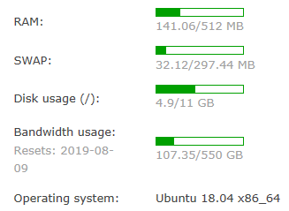

缘起
从16年开始接触linux服务器，对vps的感受更多是玩玩而已，没事跑个小c程序之类的，作为一个云端的编译器这么使着的。慢慢看着身边的人技术水平慢慢增高，虽然自己想着有一天要好好鼓捣一通，都最终都败给了各种烦文琐事，之后对服务器探索也仅仅就是浅尝辄止。
19年底，各个方面技术都比较成熟了，学校里面的事情也少了，就打算捡回来一直在吃土的vps。既然要好好整一整，那么就要先把该装的都装上，这样才有生产力和自由度能想干啥干啥。
配置
我的配置如下所示,用的是单核的搬瓦工的vps，装上了Ubuntu18.04.2LTS

当初因为赶上了好时候，所以用18.4刀就拿下了这款甜品级别的云服务器。现在再去看搬瓦工的官网，小伙子很膨胀地标出了最低49.99刀一年的20GB服务器，果然捡便宜要趁早的道理在哪里都是有效的。
归置归置买了个域名，解析一下，再去注册个ssl证书，这样前期要花掉的钱就都花掉了。开始安安心心地部署网页服务组件：先安装LAMP堆栈（Linux+Apache+MySQL+PHP)，之后再根据需要，使用Hexo+GitHub+node的组合配置了个人的blog，评论用的valine,就算是搭了个简陋的博客雏形，至于主题嘛，先用大陆货Next凑活着，等有时间了再试试根据自己的需要改改我觉得不错的主题。
作为饭后甜点，把之前一直跑在docker里的owncloud解放出来，毕竟自己这小破站也不用考虑什么迁移的事情好的这个flag立下了，之后就算是正式开始我的鼓捣之旅啦~
我的小目标
建站的目的仅仅是想分享一些知识和所见所闻给更多的人。平常习惯了随手baidu,google,stackoerflow，渐渐的感觉到网络上的很多资源，信息其实都不是很考究，有时候跟着教程一步步走下来都有可能出现各种bug。每次找bug，找指令，翻帮助手册，都要花去不少的时间。所以想通过blog这样的方式，每次学会一点，就记录一点，给自己留个备忘录，也能帮到有需要的人。
博文主体还是以中文为主，方便随手记录一些东西。如果后期有空的话 会考虑多出一个英文双语版本，这样说不定未来工作求职等会比较方便。